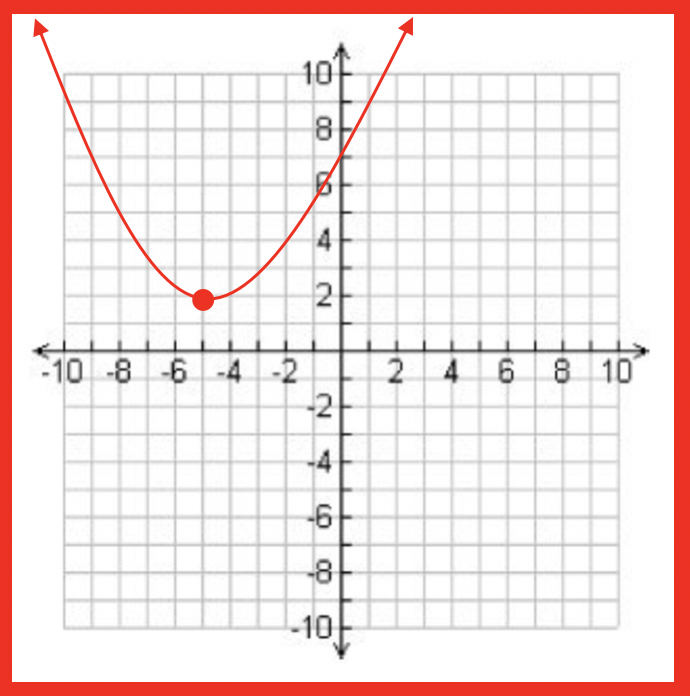

This video demonstrates how pilots use parabolas in flight to produce zero-gravity situations:
The formula for the vertex form of a parabola is:
f(x) = a(x - h)2 + k
where: a = vertical stretch or shrink of the parabola
and
(h, k) are the (x, y) coordinates of the vertex of the parabola.
h = the x-coordinate and k = the y-coordinate
A Parabola is a U-shaped graph that is vertically symmetrical about a line that intersects the vertex of the graph.
A parabola can be rotated and face either up, or down, but never sideways.
Parabolas occur naturally in the real world when considering the flight of an object moving forward while in the air. A few examples are below.
This video demonstrates how pilots use parabolas in flight to produce zero-gravity situations:
Let's begin by learning how to substitute the values of a, h, and k into the formula
Given the values of a, h, and k, fill in the formula.
Example 1: a = 3, h = 2, k = 4
Formula: f(x) = a(x - h)2 + k
Solution:
f(x) = 3(x - 2)2 + 4
Example 2: a = 2, h = 5, k = 7
Formula: f(x) = a(x - h)2 + k
Solution:
f(x) = 2(x - 5)2 + 7
Example 3: a = 1, h = -4, k = -3
Formula: f(x) = a(x - h)2 + k
Solution:
f(x) = (x + 4)2 - 3
Example 4: a = -3, h = -1, k = -6
Formula: f(x) = a(x - h)2 + k
Solution:
f(x) = -3(x + 1)2 - 6
The Axis of Symmetry of a Parabola
Example 1:
Solution:
First, we need to locate the vertex and write its location as an ordered pair. Since the x-coordinate is 4 and the y-coordinate is -3, the vertex is the ordered pair (4, -3). This implies that the vertex lies along the vertical line
x = 4.
Answer: x = 4
Example 2:

Solution:
First, we need to locate the vertex and write its location as an ordered pair. Since the x-coordinate is -5 and the y-coordinate is 2, the vertex is the ordered pair (-5, 2). This implies that the vertex lies along the vertical line
x = -5.
Answer: x = -5
Example 3:
Solution:
First, we need to locate the vertex and write its location as an ordered pair. Since the x-coordinate is 3 and the y-coordinate is 8, the vertex is the ordered pair (3, 8). This implies that the vertex lies along the vertical line
x = 3.
Answer: x = 3
The Maximum and Minimum of a Parabola
Example 1:
Calculate the y-intercept of the parabola f(x) = 2(x - 3)2 + 6
Solution:
Substitute x = 0 into the equation then simplify.
f(x) = 2(0 - 3)2 + 6
f(x) = 2(-3)2 + 6
f(x) = 18 + 6
f(x) = 24
f(x) = 24 means y = 24 since f(x) and y mean the same thing. The y-intercept of the graph is at (0, 24).
Example 2:
Calculate the y-intercept of the parabola f(x) = 4(x - 2)2 + 5
Solution:
Substitute x = 0 into the equation then simplify.
f(x) = 4(0 - 2)2 + 5
f(x) = 4(-2)2 + 5
f(x) = 16 + 5
f(x) = 21
f(x) = 21 means y = 21 since f(x) and y mean the same thing. The y-intercept of the graph is at (0, 21).
Example 3:
Calculate the y-intercept of the parabola f(x) = -3(x + 1)2 - 6
Solution:
Substitute x = 0 into the equation then simplify.
f(x) = -3(0 + 1)2 - 6
f(x) = -3(1)2 - 6
f(x) = -3 - 6
f(x) = -9
f(x) = -9 means y = -9 since f(x) and y mean the same thing. The y-intercept of the graph is at (0, -9).
Using the vertex and the y-intercept, you can create a "rough-draft" of the graph of the parabola. Additional points on the graph can be found by substituting different values of x in to the equation and calculating the corresponding values of y. Turning the x-and y-values into ordered pairs (x, y) and plotting them on the graph will give you a sketch of the graph with increased accuracy. This process is covered in the "Graphing Parabolas" module.
Example 2: Determine whether the graph opens upwards or downwards.
f(x) = 3(x + 9)2 + 7
Solution: the value of "a" is +3. The graph opens upwards.
In this lesson, you have learned a lot about the basics of a Parabola in vertex form. Each of these pieces come together to help you make a sketch of its graph. Each of the properties needs to be memorized.